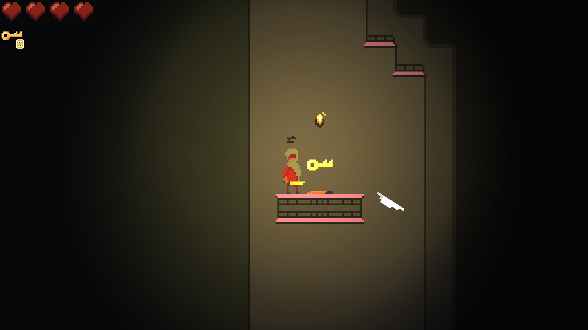

Tommy Mitchell
Game Developer, Programmer, Artist
About Me
Hi, I’m Tommy! I’m a programmer that likes making video games and that cares about aesthetics.
I’ve been making games and pixel art since I was a kid, messing around with things like Scratch, Roblox, and Minecraft. I always wanted to do so many different things when I grew up, but after I took a computer science class in high school, I knew that I was hooked on coding.
From there, I attented the University of Houston, graduating in December of 2020 with a Bachelor of Science in Computer Science and a minor in Mathematics. My skills have come a long way — and I know enough to know that there’s still so much to learn.
Since graduating, I’ve done freelance work as well as video game development, working at Precursor Gaming in Unreal Engine 4 to develop a space-simulation game. I’ve also spent time working on personal projects, participating in game jams with Unity and building my own demos.
While in college, I interned at Asset Living in Houston, TX, helping to migrate the company to Microsoft Sharepoint and developing an application to allow automated invoice uploads. I also took a two-semester long course in video game development, working in a team of four using Unity to create a 2D puzzle-platformer that was best in class.
In my free time, I’m a hobbyist rock climber and an avid reader.
Portfolio
Booper
Booper is an in-development JavaScript library based on Josh W. Comeau’s useBoop React effect, using my own fork of the spring library wobble.
If you’re on a computer, you’ve probably seen some of the effects on this page: the magnifying glass on each portfolio item, the close button on this modal, or the download button for my resume. Play around with the examples below, and tap them if you’re on mobile!
Golden Soul
As part of a two-semester course series in game development, I worked with a team of four using Unity to create a puzzple-platformer demo centered around teleportation. My responsibilities included implementing mechanics, designing levels, and creating all art assets. Our game was among the best in the class, and was selected to compete in a competition hosted by Saljack Enterprises.
Unbound
A short platformer made in a weekend for Ludum Dare 49 centered around dashing and escaping a collapsing cave. The game is playable in-browser on Itch.io. Created in Unity, with all art and music made solo.
Boids
A boid system is an emergent set of rules that “simulates the flocking behavior of birds by steering each individual boid according to said simple rules. This demo is an example of the boids algorithm extended to bees in Unity, and is viewable in-browser on Itch.io.
C Demos
A collection of small demo programs coded in C and compiled to WebAssembly and run in-browser, using a minimal JS implementation of the WASI interface paired with a custom CSS frontend mimicking the appearance of a terminal. Combined a variety of limited resources and sparse documentation while researching to create a working solution.
Random Color
A small demo made for the Game Boy Advance, I created this to learn how to make video games on the handheld console. It generates a series of 16-bit random colors (and optionally displays their hex codes), and can save up to 256 different colors. Additionally, it temporarily stores each randomly generated color, allowing you to go back if you’ve missed it. Coded entirely in C.